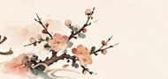

秋日书房 · 午后读《山居笔记》
窗外桂花已落，案头新焙的茶还温热。翻至卷三，笔者记中山雨后云起，心忽而静。读书如与古人对坐，一盏一页皆是时光。

一条纵向的时光线，拾起每一段文字与思绪 · 56 篇随笔 · 自 2024 年起
窗外桂花已落，案头新焙的茶还温热。翻至卷三，笔者记中山雨后云起，心忽而静。读书如与古人对坐，一盏一页皆是时光。
夜雨敲窗，巷深灯微。想起最爱的那首诗，于是也写下几行：青苔覆阶，千山是未寄出的信。
新茶入口，清甜回甘。午后与友人围炉庭院，谈字画，读闲书。茶烟袅袅，时光亦如茶汤，渐渐浓却而绵长。
陶公言“少无适俗韵，性本爱丘山”。重读此篇，忽觉今人亦困于尘网。遂记数笔，以自勉。